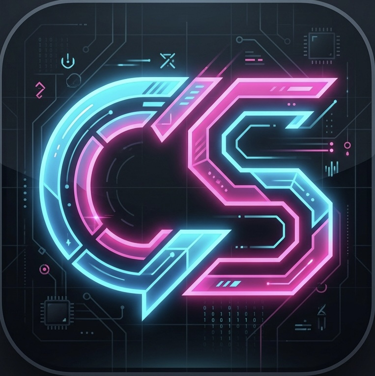

MỤC 01 / 06·BẮT ĐẦU
Mở website bằng Safari
Bắt đầu tại cuios.shop trên trình duyệt Safari của thiết bị.
Có thể mở toàn màn hình để xem rõ thao tác.Xem bài Telegram

LÀM THEO TỪNG BƯỚC
Từ mua chứng chỉ đến cài ứng dụng đầu tiên.
Chọn bước bạn cần, xem video và làm theo trên máy.
Chọn một app để bắt đầu. Bạn cũng có thể cài cả hai.

Chứng chỉ đã có sẵn · Nguồn IPA trong app
Xem cách dùng CSignTải chứng chỉ và nhập thủ công trước khi ký IPA
Xem cách dùng ESignCSign hỗ trợ iOS 16 trở lên theo bài hướng dẫn. Cả CSign và ESign đều có thể ký IPA. Xem thông báo mới
Bắt đầu tại cuios.shop trên trình duyệt Safari của thiết bị.
Thực hiện các bước trên Safari của iPhone hoặc iPad.
ESign cần được nhập chứng chỉ trước khi ký và cài IPA.
Mỗi bản sao cần mã định danh khác với ứng dụng gốc.
Nếu chưa từng cài đặt, hãy mở cuios.shop trên Safari và mua chứng chỉ cho thiết bị. Sau đó chọn CSign hoặc ESign: CSign được kênh hướng dẫn ưu tiên cho người mới, còn ESign cần nhập chứng chỉ thủ công. Bạn không cần làm cả hai cách.
Theo thông báo mới, CSign đã có sẵn chứng chỉ, nguồn IPA và mục Cài đặt → HDSD trong ứng dụng. ESign cần tải và nhập chứng chỉ thủ công. Cả hai đều ký được IPA; bạn có thể dùng app đã quen hoặc cài cả hai.
Trước khi cài IPA, bạn cần tải và nhập chứng chỉ của mình vào ESign. Đây là lưu ý trong bài hướng dẫn ESign trên kênh Telegram. Hãy xem bước “Cài ESign & nhập chứng chỉ” trước khi tiếp tục.
Thay đổi mã định danh ứng dụng (Bundle Identifier) để không trùng với ứng dụng gốc. Bạn có thể xem video “Nhân bản ứng dụng” để theo dõi cách thao tác.
Bấm “Xem bài Telegram” ngay bên dưới video để mở bài hướng dẫn gốc. Nếu vẫn gặp khó khăn khi cài đặt, nhắn cho CUIOS kèm bước đang thực hiện và ảnh thông báo lỗi.
CUIOS ở đây để giúp bạn làm tiếp bước còn vướng.